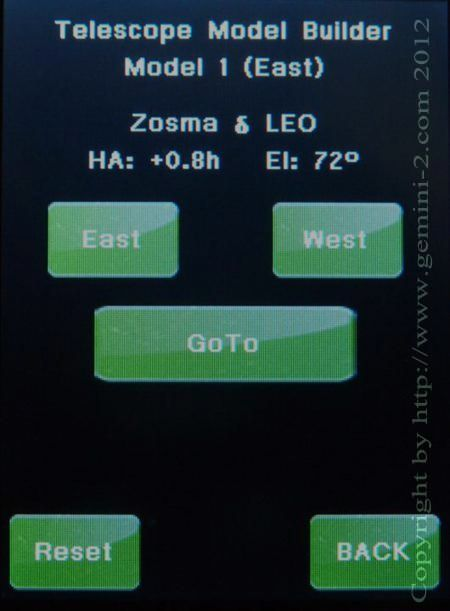

| Interactive Hand-Controller Menus - click on green button to Navigate |
|  | This is the Semi Automatic Modeling Function. It will automatically pick a star that should be above the horizon and on the east side. (it probably will not be the same star shown in the menu on the left.) If you do not want the star it picks simply hit the East button and it will pick another. I keep hitting the West button until I was sure that I had picked a star that would cause a Meridian Flip. Also stars on the west side that are close to the meridian can be added to the East model. If the mount does not pass 90 degrees Dec (IE do a meridian flip, then you are still building a model on the east. The same holds true when going from a model being built on the west to the east. This is actually designed this way to help refine each model as you move from east to west or west to east. If you are happy with the star it selects, then hit "GOTO". This tutorial does not let you select different stars - so Please hit GOTO. |
| NOTE: For the Demo, I keep hitting West until a start came up that I was sure would cause a Meridian Flip. |